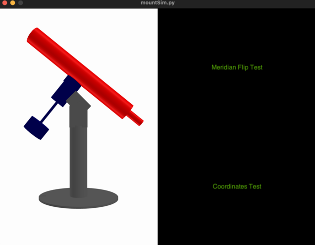

Mount Simulator
mountSim is a Python program that connects to a TeenAstro through Wifi and displays a simulated mount. It reads the steps on both axes, and shows the mount's movements, including Meridian Flip (for German Equatorials only) which can help debugging eventual firmware problems.

Installation
Download the python scripts and STL files from Github. Install Python 3.8 or higher, and the following modules:
pip install argparse numpy trimesh glooey pyglet threading serial serial.tools time datetime
Launch mountSim from the command line. The single option is the IP address of your TeenAstro.
python mountSim.py --ip 192.168.0.21
A graphic window opens, that displays a simplified mount model, selected according to your type of mount:
You can now move the mount with the hand controller. It is also possible to control TeenAstro remotely, either with the Web interface from the SHC, or through a program running on your PC (Ekos, SkySafari etc.).
Note that you can have only one Wifi (IP) port at a time, so the PC program should use USB, not Wifi.
You can run mountSim in parallel with your mount, or without. In this case it is possible to speed up the maximum speed up to 2000x or more. (You may need to lower the gear reduction).
Use these mouse movements: left-click+drag to change the view orientation, middle-click+drag to pan around.
Program Design
The program consists of 2 python scripts (mountSim.py and teenastro.py) and STL files that represent the parts of each mount. I used the 3d parametric CAD tool SolveSpace to design the mounts. The display itself is done by the trimesh library and a pyglet viewer.